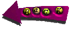

What connects most artists, is what connects most people. Fear and blindness. We fear because we do not see. We do not see because we fear. The circle is unbroken. Self-perpetuationg. We say to ourselves as artists, we say: "I make art for me. No, no, I make it for other people. Whatever the case, if I make art, it will help in some way. Maybe it will help me see. Feel better. Understand more deeply. Or, even if it doesn't I can hell, I can sell it. Don't look at me that way, I might! Sure anything's possible, right? Sure, sure the money may mess me up even more but that's the price you gotta pay, cause with money I won't have to worry any more. Cause with money I'll be above that common shit.
